Chameleon color palettes: nature's masters of chromatic adaptation
Source:vignettes/chameleon-palettes.Rmd
chameleon-palettes.RmdThe biology of chameleon coloration
Chameleons (family Chamaeleonidae) are renowned for their remarkable ability to change color, a capacity that has fascinated naturalists since antiquity. Contrary to popular belief, chameleons do not change color primarily for camouflage; rather, color change serves functions in thermoregulation, communication, and social signaling (Stuart-Fox & Moussalli (2009)).
The mechanism underlying color change involves specialized cells called chromatophores arranged in layers beneath the transparent epidermis. The uppermost layer contains xanthophores (yellow pigments) and erythrophores (red pigments), while deeper layers contain iridophores with guanine nanocrystals that reflect light, and melanophores containing dark melanin. By adjusting the spacing of nanocrystals in the iridophore layer, chameleons can shift from reflecting short wavelengths (blue) to long wavelengths (red), with the overlying yellow pigments producing the characteristic green coloration when combined with blue reflectance (Teyssier et al. (2015)).
koloRo includes over 20 palettes based on documented coloration patterns of chameleon species from three continents, derived from scientific literature, field guides, and natural history documentation.
Overview of chameleon palettes
plot_category("chameleons", max_display = 20)
#> Showing first 20 of 22 palettes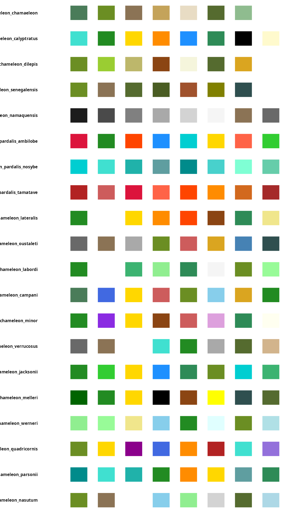
Geographic distribution and genera
The family Chamaeleonidae comprises approximately 220 species distributed across Africa, Madagascar, southern Europe, and parts of Asia. The majority of species diversity occurs in Madagascar (genera Calumma, Furcifer, and Brookesia) and sub-Saharan Africa (genera Chamaeleo, Trioceros, Kinyongia, and Rhampholeon).
African chameleons (genus Chamaeleo)
The genus Chamaeleo includes some of the most widely distributed chameleon species, ranging from the Mediterranean Basin to southern Africa.
Common chameleon (Chamaeleo chamaeleon)
The only chameleon native to Europe, C. chamaeleon inhabits the Mediterranean coastal regions of Spain, Portugal, southern Italy, Greece, and North Africa. Its coloration ranges from yellowish-brown through various greens to dark brown, typically displaying two lighter lateral stripes (Cuadrado et al. (2001)).
plot_palette("chameleon_chamaeleon")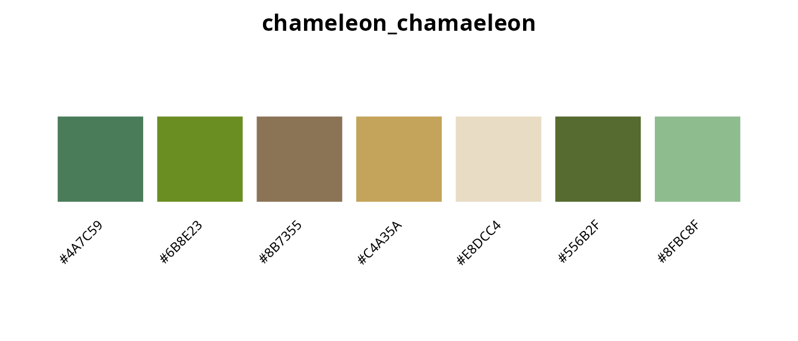
Veiled chameleon (Chamaeleo calyptratus)
Native to the Arabian Peninsula, the veiled chameleon is distinguished by its prominent casque and bold coloration. Males display turquoise, gold, and orange bands against a green background, making this species one of the most visually striking in the genus (Ferguson et al. (2007)).
plot_palette("chameleon_calyptratus")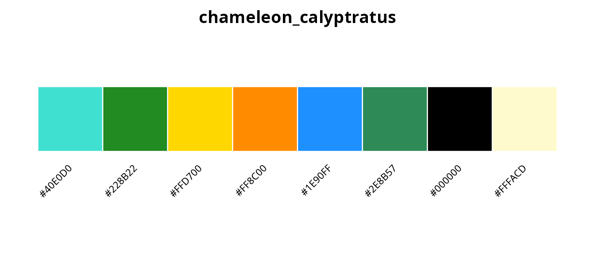
Flap-necked chameleon (Chamaeleo dilepis)
The most widely distributed African chameleon, C. dilepis ranges across sub-Saharan Africa from Ethiopia to South Africa. Coloration varies through greens, yellows, and browns with characteristic pale flank stripes (Tolley & Burger (2007)).
plot_palette("chameleon_dilepis")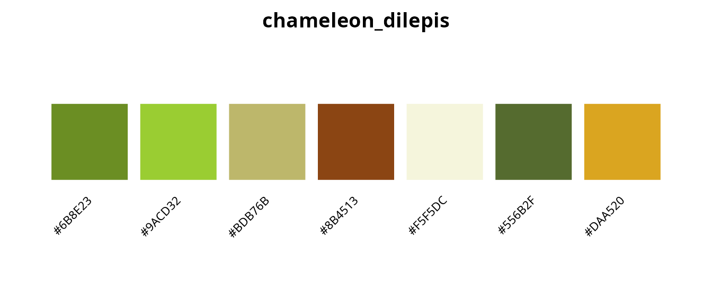
Namaqua chameleon (Chamaeleo namaquensis)
A ground-dwelling desert specialist from the Namib, C. namaquensis uses color change primarily for thermoregulation. In cool mornings, individuals turn nearly black to absorb heat; at midday, they become pale grey or white to reflect solar radiation. Remarkably, they can display both colors simultaneously, divided along the spine (Burrage (1973)).
plot_palette("chameleon_namaquensis")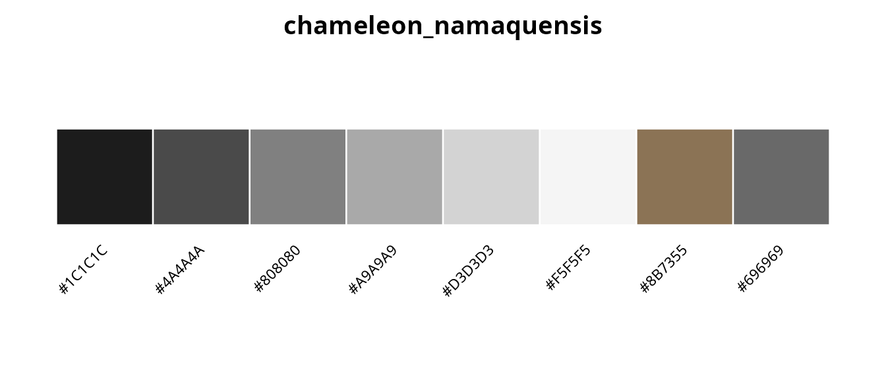
Malagasy chameleons (genus Furcifer)
Madagascar harbors extraordinary chameleon diversity, with the genus Furcifer containing some of the most colorful species known.
Panther chameleon (Furcifer pardalis)
Perhaps the most celebrated chameleon for its spectacular coloration, the panther chameleon exhibits remarkable geographic variation in male color patterns. Different populations, known as “locales,” display distinct color morphs that correlate with mitochondrial haplogroups (Grbic et al. (2015)).
plot_palette(c(
"chameleon_pardalis_ambilobe",
"chameleon_pardalis_nosybe",
"chameleon_pardalis_tamatave"
))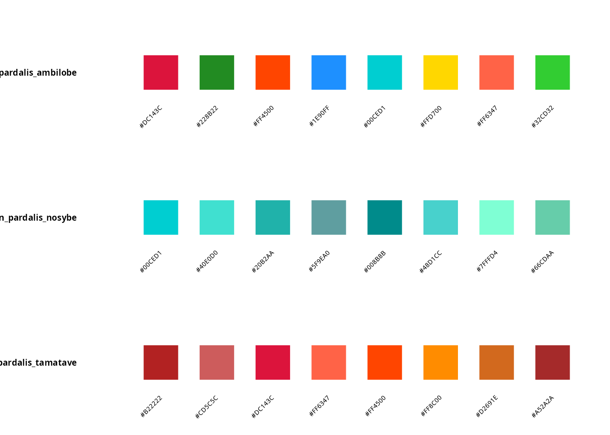
The Ambilobe locale displays the full spectrum of reds, greens, oranges, and blues; Nosy Be individuals are characterized by vibrant turquoise and blue-green coloration; Tamatave specimens are predominantly red with orange accents.
Carpet chameleon (Furcifer lateralis)
Named for the intricate carpet-like patterns displayed by gravid females, F. lateralis exhibits reversed sexual dichromatism, with females more colorful than males (Brady & Griffiths (1999)).
plot_palette("chameleon_lateralis")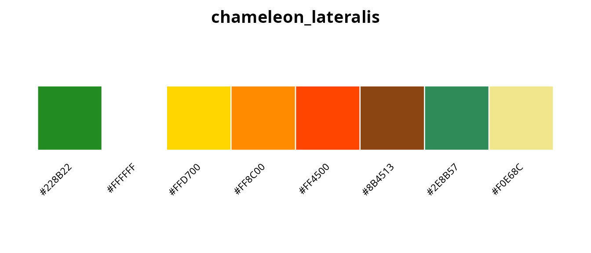
Labord’s chameleon (Furcifer labordi)
Remarkable for having the shortest lifespan of any tetrapod (4-5 months post-hatching), F. labordi displays green coloration with white lateral stripes. Individuals show dramatic color changes immediately before death, a phenomenon documented in 2024 PBS footage (Karsten et al. (2008)).
plot_palette("chameleon_labordi")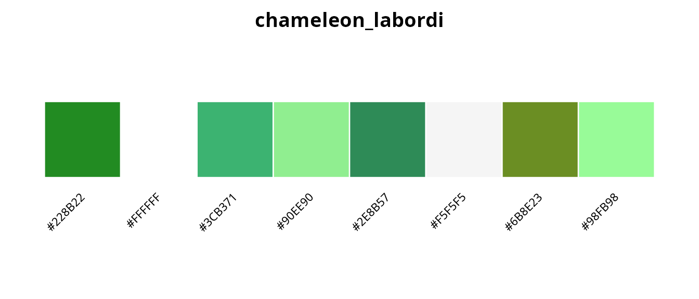
Jeweled chameleon (Furcifer campani)
Endemic to the central highlands of Madagascar at elevations of 1,800-2,600 m, the jeweled chameleon earns its name from the bright blue spots and red markings above the eyes that adorn its green body (Raselimanana et al. (2000)).
plot_palette("chameleon_campani")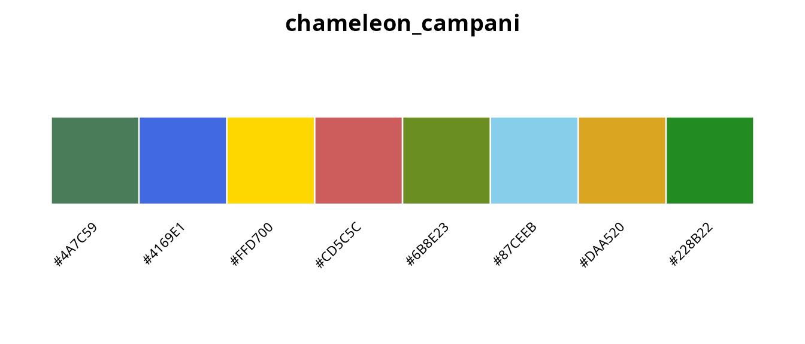
Horned chameleons (genus Trioceros)
The African genus Trioceros includes several species with prominent cranial horns, a feature used in male-male combat and species recognition.
Jackson’s chameleon (Trioceros jacksonii)
The three-horned Jackson’s chameleon, native to East African montane forests and introduced to Hawaii, displays bright green coloration with blue and yellow accents. Males possess three annulated horns reminiscent of the prehistoric Triceratops (Martin (1992)).
plot_palette("chameleon_jacksonii")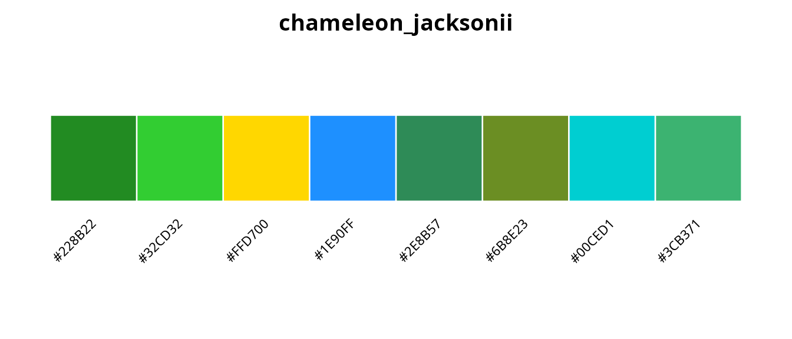
Meller’s chameleon (Trioceros melleri)
The largest chameleon in mainland Africa, T. melleri displays deep forest green with distinctive yellow stripes and black spots. Stress patterns include dark mottling that intensifies with increasing agitation (Necas (2004)).
plot_palette("chameleon_melleri")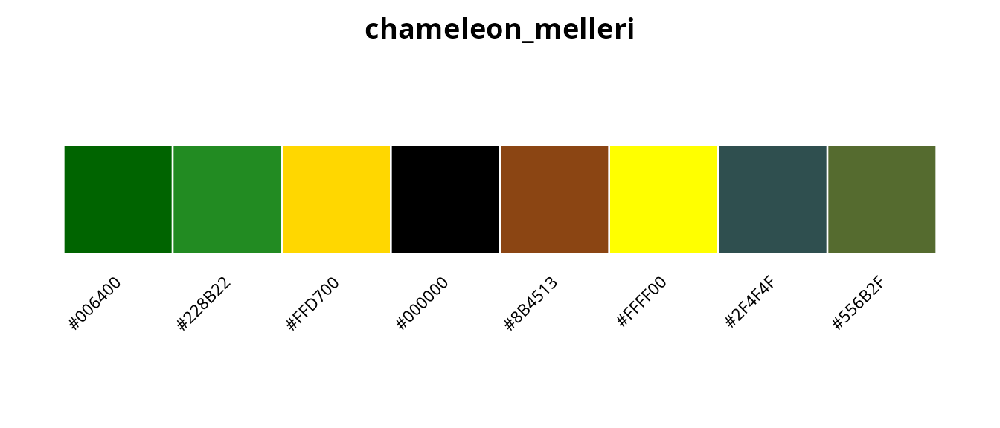
Four-horned chameleon (Trioceros quadricornis)
Endemic to the montane forests of Cameroon and Nigeria, this species displays green-yellow base coloration with purple, blue, and orange accents. The sail-like dorsal crest and multiple horns (up to six in some individuals) make this among the most dramatic chameleon species (Gonwouo et al. (2006)).
plot_palette("chameleon_quadricornis")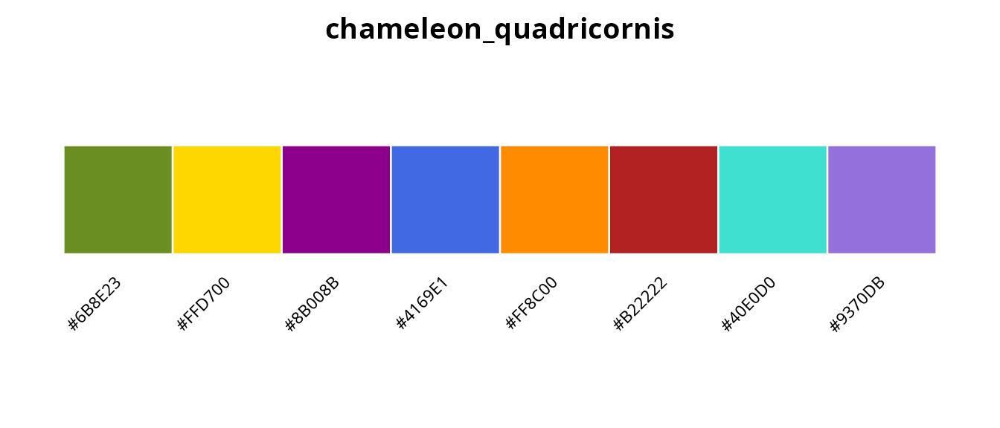
Giant chameleons (genus Calumma)
Madagascar’s genus Calumma includes the world’s largest chameleons by body mass.
Parson’s chameleon (Calumma parsonii)
The heaviest chameleon species, C. parsonii displays turquoise-blue-green body coloration with striking yellow or orange eye turrets. Several color variants exist, potentially representing distinct subspecies (Jenkins et al. (2011)).
plot_palette("chameleon_parsonii")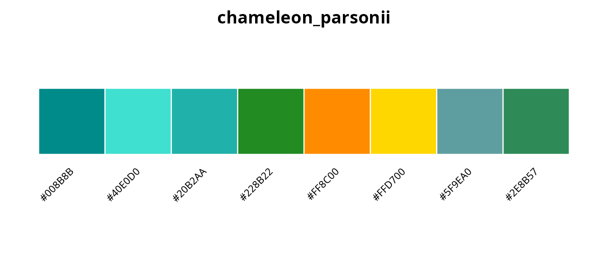
Leaf chameleons (genera Brookesia and Rhampholeon)
The smallest chameleons belong to the leaf chameleon genera, with cryptic coloration adapted for life among leaf litter.
plot_palette("chameleon_brookesia")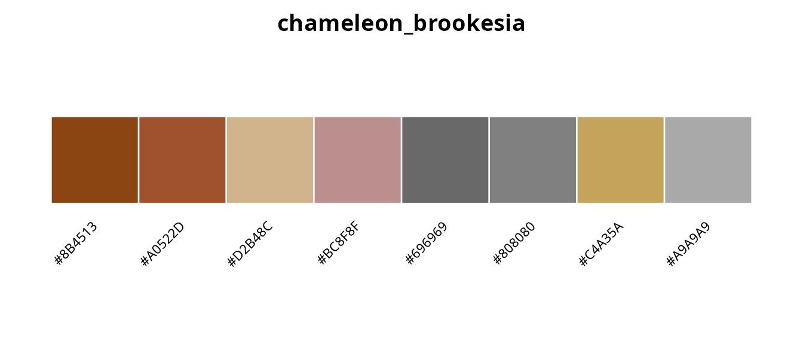
These miniature species display muted browns, tans, and greys that provide camouflage among dead leaves on the forest floor (Glaw et al. (2012)).
Complete chameleon palette inventory
cham_list <- list_palettes(category = "chameleons")
knitr::kable(cham_list, caption = "All chameleon palettes in koloRo")| palette_name | category | n_colors |
|---|---|---|
| chameleon_chamaeleon | chameleons | 7 |
| chameleon_calyptratus | chameleons | 8 |
| chameleon_dilepis | chameleons | 7 |
| chameleon_senegalensis | chameleons | 7 |
| chameleon_namaquensis | chameleons | 8 |
| chameleon_pardalis_ambilobe | chameleons | 8 |
| chameleon_pardalis_nosybe | chameleons | 8 |
| chameleon_pardalis_tamatave | chameleons | 8 |
| chameleon_lateralis | chameleons | 8 |
| chameleon_oustaleti | chameleons | 8 |
| chameleon_labordi | chameleons | 8 |
| chameleon_campani | chameleons | 8 |
| chameleon_minor | chameleons | 8 |
| chameleon_verrucosus | chameleons | 8 |
| chameleon_jacksonii | chameleons | 8 |
| chameleon_melleri | chameleons | 8 |
| chameleon_werneri | chameleons | 8 |
| chameleon_quadricornis | chameleons | 8 |
| chameleon_parsonii | chameleons | 8 |
| chameleon_nasutum | chameleons | 8 |
| chameleon_fischeri | chameleons | 8 |
| chameleon_brookesia | chameleons | 8 |
Using chameleon palettes with ggplot2
The chameleon palettes work seamlessly with koloRo’s ggplot2 integration:
library(ggplot2)
# Categorical data with panther chameleon Ambilobe palette
ggplot(iris, aes(Sepal.Length, Sepal.Width, color = Species)) +
geom_point(size = 3, alpha = 0.8) +
scale_color_koloro("chameleon_pardalis_ambilobe") +
labs(
title = "Iris dataset with panther chameleon (Ambilobe) palette",
subtitle = "Furcifer pardalis: the most colorful chameleon species"
) +
theme_minimal() +
theme(legend.position = "bottom")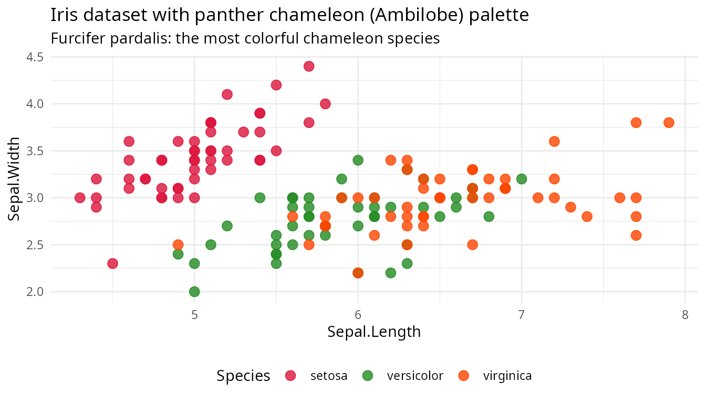
# Continuous data with Jackson's chameleon palette
ggplot(faithfuld, aes(waiting, eruptions, fill = density)) +
geom_tile() +
scale_fill_koloro_c("chameleon_jacksonii") +
labs(
title = "Old Faithful eruptions with Jackson's chameleon palette",
subtitle = "Trioceros jacksonii: the three-horned chameleon of East Africa"
) +
theme_minimal()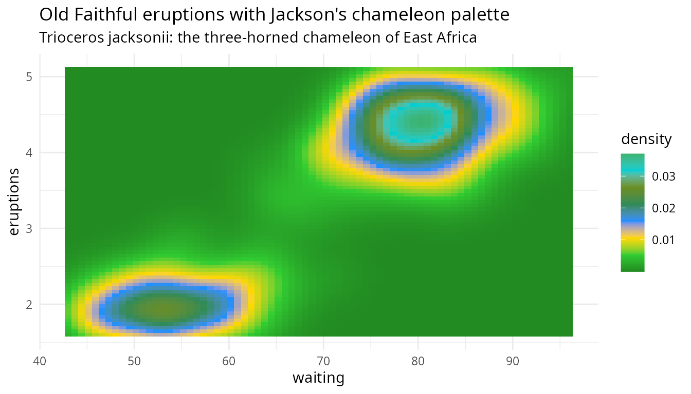
Conservation note
Many chameleon species face conservation threats from habitat loss and the international pet trade. Several species included in this palette collection are listed as Vulnerable or Endangered by the IUCN. koloRo aims to raise awareness of chameleon diversity while supporting scientific visualization needs.
References
Stuart-Fox, D., & Moussalli, A. (2009). Camouflage, communication and thermoregulation: lessons from colour changing organisms. Philosophical Transactions of the Royal Society B, 364, 463-470. doi:10.1098/rstb.2008.0254
Teyssier, J., Saenko, S.V., van der Marel, D., & Milinkovitch, M.C. (2015). Photonic crystals cause active colour change in chameleons. Nature Communications, 6, 6368. doi:10.1038/ncomms7368
Cuadrado, M., Martin, J., & Lopez, P. (2001). Camouflage and escape decisions in the common chameleon Chamaeleo chamaeleon. Biological Journal of the Linnean Society, 72, 547-554. doi:10.1111/j.1095-8312.2001.tb01337.x
Ferguson, G.W., Brinker, A.M., Gehrmann, W.H., Bucklin, S.E., Baines, F.M., & Mackin, S.J. (2007). Voluntary exposure of some western-hemisphere snake and lizard species to ultraviolet-B radiation in the field. Applied Herpetology, 4, 227-244.
Tolley, K., & Burger, M. (2007). Chameleons of Southern Africa. Cape Town: Struik Publishers. ISBN: 978-1-77007-446-0
Burrage, B.R. (1973). Comparative ecology and behaviour of Chamaeleo pumilus pumilus and C. namaquensis. Annals of the South African Museum, 61, 1-158.
Grbic, D., Saenko, S.V., Randriamoria, T.M., Debry, A., Raselimanana, A.P., & Milinkovitch, M.C. (2015). Phylogeography and support vector machine classification of colour variation in panther chameleons. Molecular Ecology, 24, 3455-3466. doi:10.1111/mec.13241
Brady, L.D., & Griffiths, R.A. (1999). Status assessment of chameleons in Madagascar. IUCN Species Survival Commission. Cambridge: IUCN.
Karsten, K.B., Andriamandimbiarisoa, L.N., Fox, S.F., & Raxworthy, C.J. (2008). A unique life history among tetrapods: an annual chameleon living mostly as an egg. Proceedings of the National Academy of Sciences, 105, 8980-8984. doi:10.1073/pnas.0802468105
Raselimanana, A.P., Raxworthy, C.J., & Nussbaum, R.A. (2000). A revision of the dwarf Zonosaurus Boulenger (Reptilia: Squamata: Cordylidae) from Madagascar, including descriptions of three new species. Scientific Papers, Natural History Museum, University of Kansas, 18, 1-16.
Martin, J. (1992). Masters of Disguise: A Natural History of Chameleons. New York: Facts on File. ISBN: 978-0816024377
Necas, P. (2004). Chameleons: Nature’s Hidden Jewels (2nd ed.). Frankfurt: Edition Chimaira. ISBN: 978-3930612840
Gonwouo, N.L., LeBreton, M., Chirio, L., Ineich, I., Tchamba, N.M., Ngassam, P., Dzikouk, G., & Diffo, J.L. (2006). Biodiversity and conservation of the reptiles of the Mount Cameroon area. African Journal of Herpetology, 55, 79-90.
Jenkins, R.K.B., Rabearivelo, A., Chan, L.M., Andre, J.A., Randrianavelona, R., & Randrianantoandro, J.C. (2011). Calumma parsonii. The IUCN Red List of Threatened Species 2011.
Glaw, F., Kohler, J., Townsend, T.M., & Vences, M. (2012). Rivaling the world’s smallest reptiles: discovery of miniaturized and microendemic new species of leaf chameleons (Brookesia) from northern Madagascar. PLoS ONE, 7, e31314. doi:10.1371/journal.pone.0031314
Session info
sessionInfo()
#> R version 4.6.0 (2026-04-24)
#> Platform: x86_64-pc-linux-gnu
#> Running under: Ubuntu 24.04.4 LTS
#>
#> Matrix products: default
#> BLAS: /usr/lib/x86_64-linux-gnu/openblas-pthread/libblas.so.3
#> LAPACK: /usr/lib/x86_64-linux-gnu/openblas-pthread/libopenblasp-r0.3.26.so; LAPACK version 3.12.0
#>
#> locale:
#> [1] LC_CTYPE=es_ES.UTF-8 LC_NUMERIC=C
#> [3] LC_TIME=es_ES.UTF-8 LC_COLLATE=es_ES.UTF-8
#> [5] LC_MONETARY=es_ES.UTF-8 LC_MESSAGES=es_ES.UTF-8
#> [7] LC_PAPER=es_ES.UTF-8 LC_NAME=C
#> [9] LC_ADDRESS=C LC_TELEPHONE=C
#> [11] LC_MEASUREMENT=es_ES.UTF-8 LC_IDENTIFICATION=C
#>
#> time zone: Europe/Madrid
#> tzcode source: system (glibc)
#>
#> attached base packages:
#> [1] stats graphics grDevices utils datasets methods base
#>
#> other attached packages:
#> [1] ggplot2_4.0.3 koloRo_0.1.2
#>
#> loaded via a namespace (and not attached):
#> [1] gtable_0.3.6 jsonlite_2.0.0 dplyr_1.2.1 compiler_4.6.0
#> [5] tidyselect_1.2.1 jquerylib_0.1.4 systemfonts_1.3.2 scales_1.4.0
#> [9] textshaping_1.0.5 yaml_2.3.12 fastmap_1.2.0 R6_2.6.1
#> [13] labeling_0.4.3 generics_0.1.4 knitr_1.51 htmlwidgets_1.6.4
#> [17] tibble_3.3.1 desc_1.4.3 bslib_0.10.0 pillar_1.11.1
#> [21] RColorBrewer_1.1-3 rlang_1.2.0 cachem_1.1.0 xfun_0.57
#> [25] fs_2.1.0 sass_0.4.10 S7_0.2.2 otel_0.2.0
#> [29] cli_3.6.6 withr_3.0.2 pkgdown_2.2.0 magrittr_2.0.5
#> [33] digest_0.6.39 grid_4.6.0 rstudioapi_0.18.0 lifecycle_1.0.5
#> [37] vctrs_0.7.3 evaluate_1.0.5 glue_1.8.1 farver_2.1.2
#> [41] ragg_1.5.2 rmarkdown_2.31 tools_4.6.0 pkgconfig_2.0.3
#> [45] htmltools_0.5.9